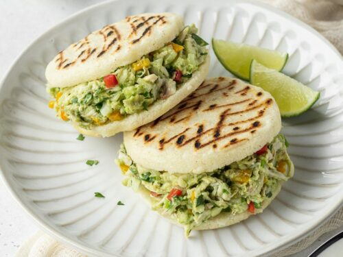

Arepa

Arepa is a type of food made of ground maize dough stuffed with a
filling
Ingredients
- 1½ cups cornmeal
- 2 cups water
- 1 avocado
- ½ chicken breast (cooked)
- 1 onion
- 5 tbsp mayonnaise
- 2 oz cilantro
- 1 tbsp olive oil
- 1 tbsp salt
- ½ tsp pepper
Method
-
Shredd the chicken completely, finely chop the onion and cilantro,
finally the diced avocado
-
In a bowl, mix all the ingredients well and season to taste, cover with
plastic wrap and set aside.
-
stir water and a pinch salt together in a large bowl to dissolve the
salt. Gradually add the cornmeal, mixing with your fingers to dissolve
any lumps, adding enough to make a soft dough that holds its shape
without cracking when molded.
-
Divide dough into 3 pieces, To shape an arepa, roll the dough into a
ball and then pat it, between your hands, into a disc. Press your thumbs
around the outside of the disc to form a nice edge.
-
Lightly oil a large iron or grill pan over medium heat. Let the skillet
get hot before adding the arepa dough. In batches, add the formed arepas
disks to the skillet. Cook each arepa about 4-6 minutes on each side, or
until they start to get light brown spots.
-
Once the arepas are ready, let cool a few minutes before handling.
Carefully slice the arepas way through, creating a pocket. Fill with the
previously prepared filling in quantities.
- Serve warm and enjoy with a juice.